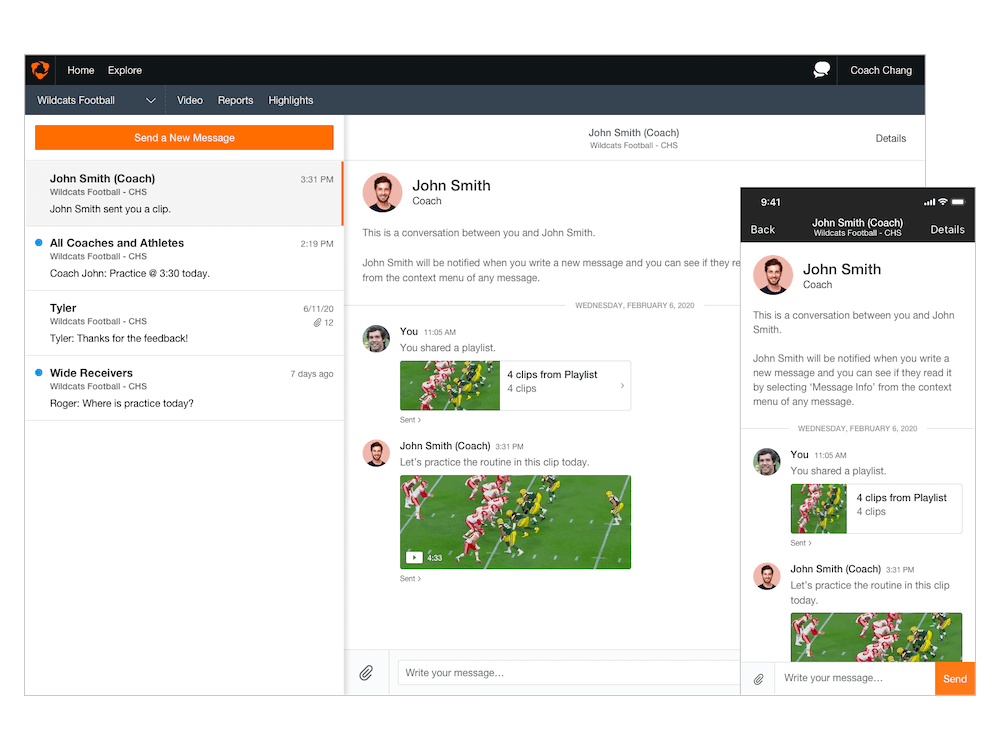
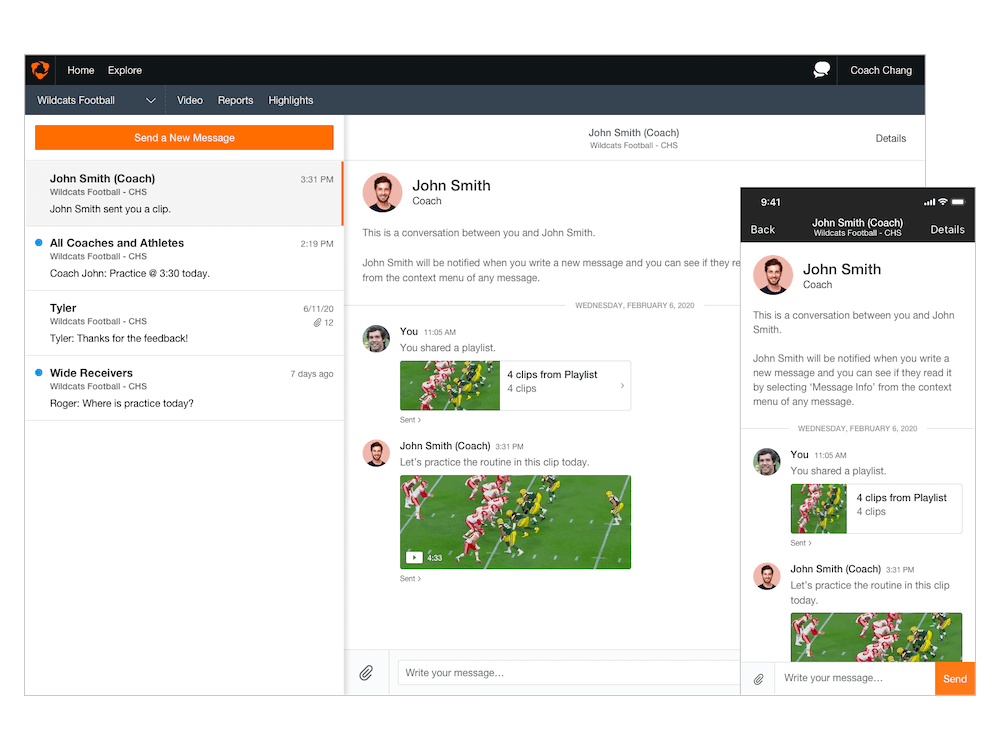

Messaging tools for
sports teams
I led the design for messaging features at Hudl, allowing coaches and athletes to send messages, videos, and attachments to each other.
User Research UI/UX Cross-platform
I led the design for messaging features at Hudl, allowing coaches and athletes to send messages, videos, and attachments to each other.
User Research UI/UX Cross-platform
Hudl is a leading sports technology company that builds video analysis and stat tools for over 3.5 million pro and amateur coaches and athletes worldwide.
At Hudl, I designed the messaging tools that facilitate team communication. These tools allow coaches and athletes to send and receive messages and share content through the Hudl platform. The messages are synced across the iOS, Android and web products.
Our team of six simplified the UX across all platforms, standardized the UI, and focused on improving speed. As the sole designer I was responsible for leading the team through the user research process, iterating on designs through rapid prototyping and usability tests, and creating the UX flows and final high-resolution visual assets.

 

For the first release, we identified two types of users across different types of sports (large football teams with multiple coaches vs. smaller swim teams): coaches and athletes. Through interviews with local teams, this led the team to three overarching design challenges:
Before we began revamping the messaging tools, Hudl had an existing beta feature that allowed coaches to send one-way messages to their team.
Because it was an in-progress MVP, there were some drawbacks:
As we audited this feature and analyzed competing products, our minds spun rapidly with new ideas. However, to figure out what direction we should take and what problems were core to our users, we needed to start afresh. Some guiding questions came to mind:
The research process comprised several concurrent efforts:
After conducting several user interviews and on-site visits, several trends became apparent. From this initial response, I began fleshing out common user scenarios and archetypes.
The following insights proved most instrumental in informing our design decisions:
With these use cases in mind, we broke the messaging product into different flows: viewing all message threads, viewing a message thread, and sending a new message.
I led multiple sketch sessions with the team to mock up different solutions to each experience. From these low-fidelity mockups, I created higher-fidelity wireframes and flows that our team could show users for feedback. Tools such as Framer.JS and Pixate allowed me to quickly replicate complex animations and interactions. For nitty-gritty details and copy, I used Sketch plugins that allowed me to display JSON data to mimic how my designs would look like to actual users.
The user research and iteration process helped us form several principles:
Within four months, our team delivered an MVP with the following:
© Kevin Chang, All Rights Reserved